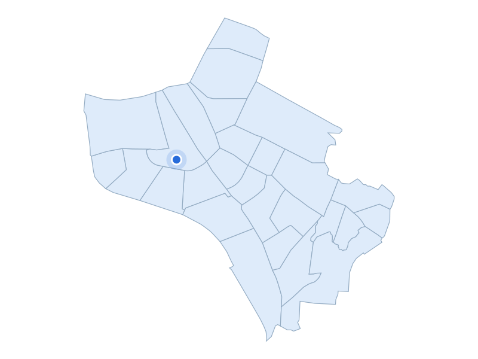

부동산 데이터 | 신혼부부가 사는 곳
거주 수 2위 · 서울 송파구

석촌호수 동호 수면·벚꽃 수변 원경
지역 자료사진 · 촬영 2025 · CC0 1.0
거주 수 상위 5개 구 · 현재 지역
01 소개 예정
02 송파구
11,752쌍
03 덕양구
11,452쌍
04 강서구
10,724쌍
05 부평구
10,204쌍
주거 특징·랜드마크
송파구 잠실권에는 잠실2·3단지처럼 2000년대 재건축을 거쳐 다시 조성된 아파트 단지들이 있습니다.
주거 특징·랜드마크
석촌호수는 동호와 서호, 산책로가 있는 도심 수변 여가 공간입니다.
거주 수 2위 · 11,752쌍

서울 송파구 · 실제 가격 집계구역
파란 점: 단지 위치
지역 아파트 실거래 중위값
21억 8,500만원
지역 거래 513건
단지 사례
레이크팰리스
30억 0만원
단지 거래 9건
2026-05-01 ~ 2026-10-31 계약
전용 83~85㎡ · 아파트 매매 · 취소 제외